The client
When I need aerial video for a marketing campaign, I want to book a certified drone operator in a few taps, at a price I see up front, so that I get the footage on time without learning anything about drones.
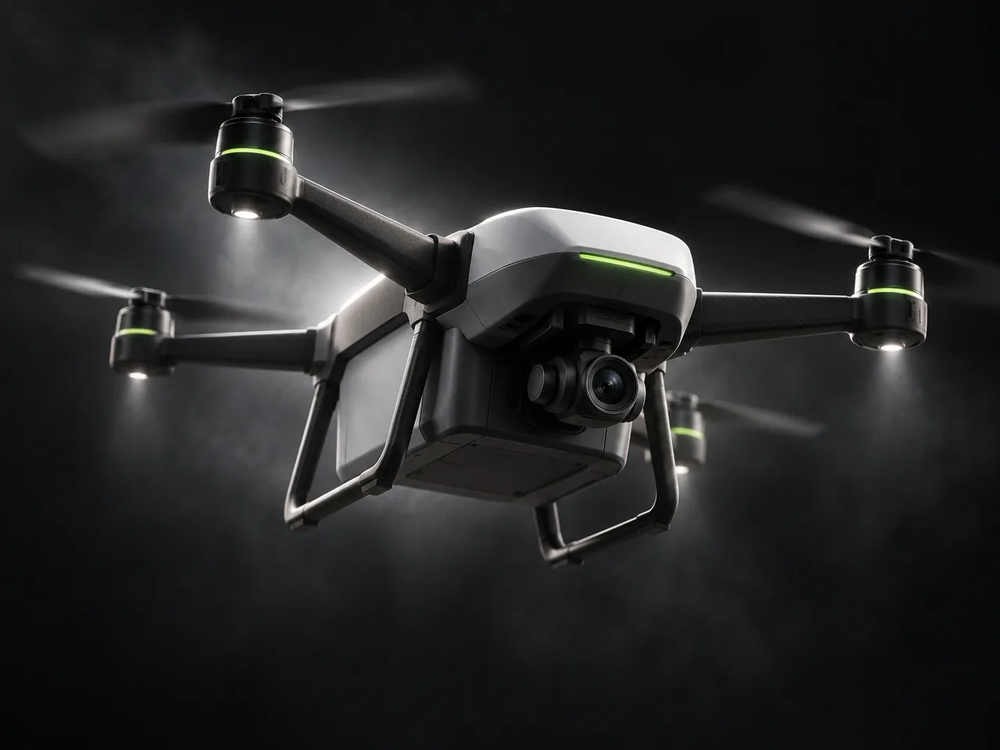
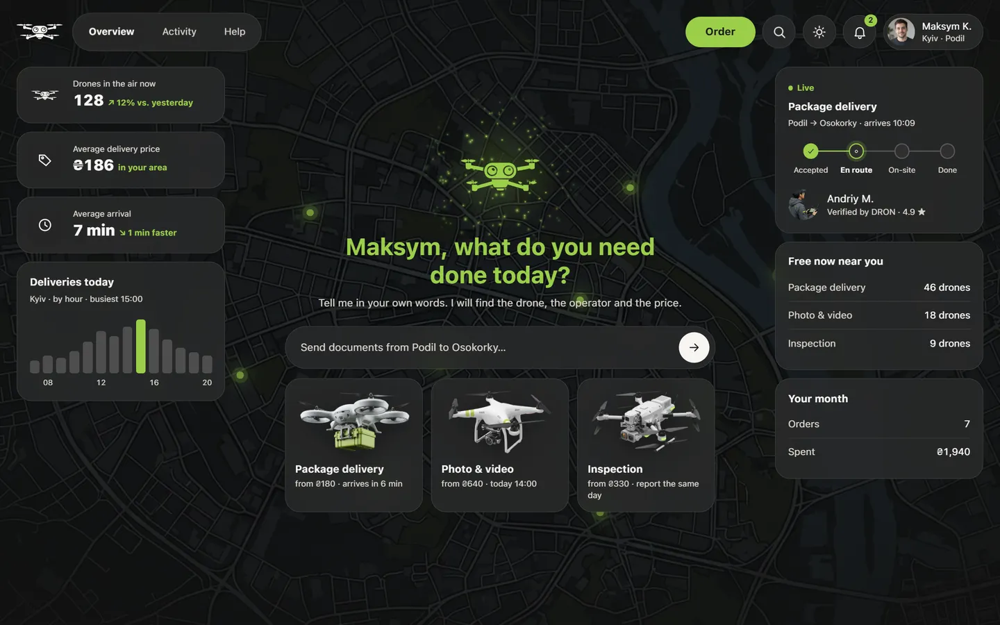


The client orders a package delivery
DRON is a drone-as-a-service product built for two users: the client and the operator. The client orders a delivery, an aerial shoot or an inspection and gets a locked price and live tracking, while DRON provides a certified operator who receives their earnings once the order is completed.
The entire project, from research to handoff, was delivered using AI tools, with Claude Code as the main tool. Large tasks were broken down and distributed across separate agents running in parallel.
Multiple AI tools and services were connected into a single workflow through custom MCP integrations. The design was audited with the Impeccable skill, and custom skills were developed for the project’s specific needs. Competitor research was carried out with Playwright.

Research is how a team learns the field before it designs anything: who already solves the problem, how, and where they fail. For DRON it studied the competitors and the people on both sides, the clients and the drone operators
0of 8
Trust mechanics, score of 35
31Bolt, best
Trust in drone delivery
87%after trying it
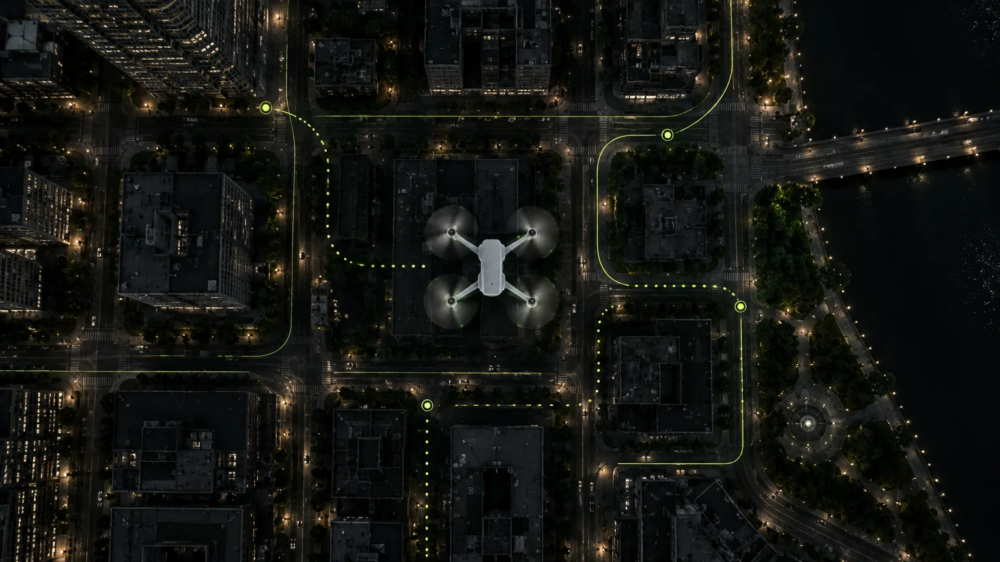
Market reality
The drone is the fear, not the operator. Before trying it, more than half of US respondents did not trust drone delivery; after it, most changed their mind.
87%
positive after a real delivery

A target audience is the group of people a product is made for: who they are, what they need and what holds them back. Knowing it shapes every decision, from the first screen to the price on the card
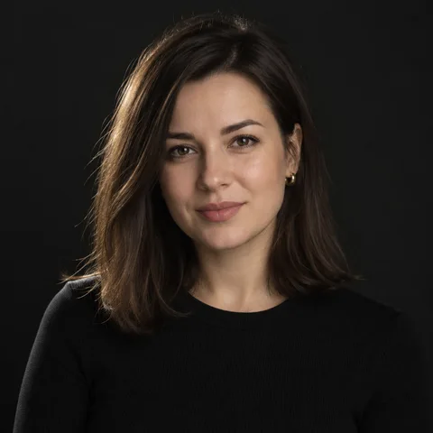
I want the result. I don't want to figure out drones. What matters is that it's reliable.
Kateryna, 31Client · marketing manager, Kyiv
Ready to pay 2× for drone delivery
64%across six European cities
Shop online, by age
90%aged 25–34
Top worries about delivery drones
Registered drone operators
1.6M+across EASA countries
Drone pilot schools, by country
117the most, in Spain
~20,000 operators trained in Ukraine by 2024
Why drone users fly
21%for work
Those who fly for fun can start earning with DRON
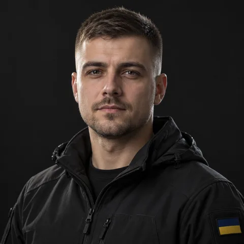
I want to fly and earn. Paperwork and finding clients are not for me.
Andrii, 26Operator · licensed drone pilot

A job to be done is the progress a person wants to make in a situation, not a feature. Each job is written in one shape, so it can be tested against the screens: When [situation], I want [motivation], so that [result]
Kateryna, 31 · the client
A marketing manager in Kyiv who has never used a drone. She hires DRON for the result, and has to trust whoever comes before she pays.
The client
When I need aerial video for a marketing campaign, I want to book a certified drone operator in a few taps, at a price I see up front, so that I get the footage on time without learning anything about drones.
The operator
When I have a few free minutes and my drone with me, I want a paid job nearby that I can take in one tap, so that my spare time turns into money.
Andrii, 26 · the operator
A licensed pilot near Kyiv with a drone and a few free hours a week. He hires DRON to fill those hours with paid jobs, without looking for clients.

A user flow is the path a person takes through the product to finish one task, step by step and screen by screen. It shows every decision and every dead end before a single screen is drawn
From the question to the delivery photo.
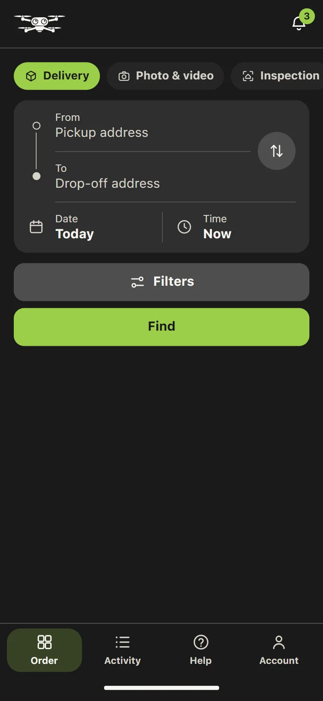
A drone free?
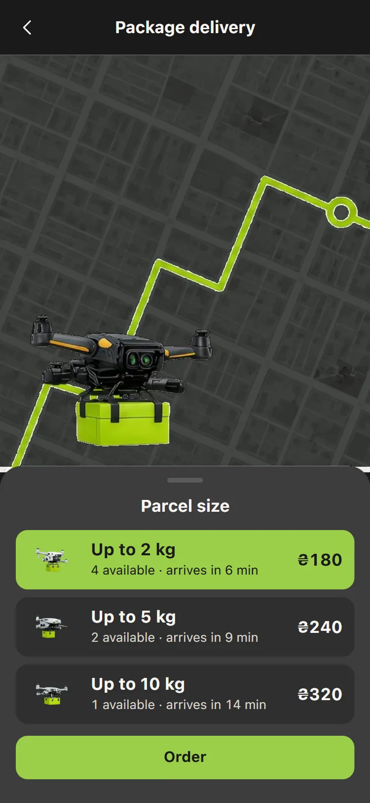
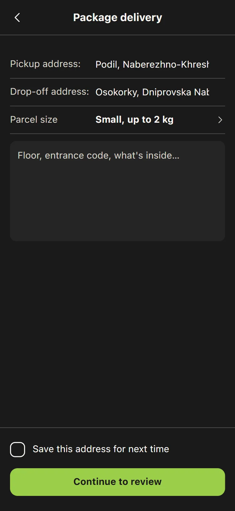
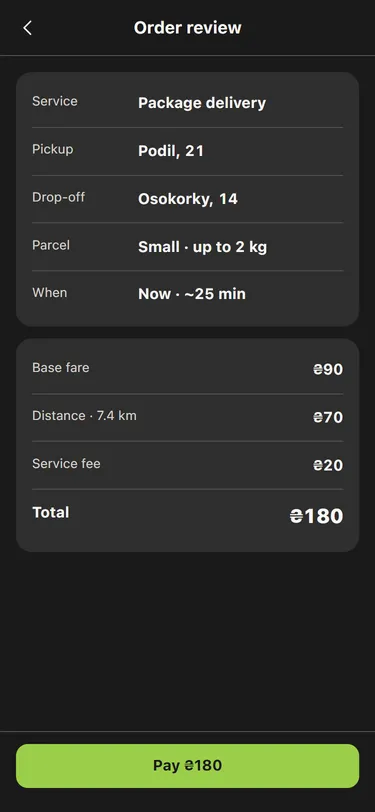
Payment authorised?
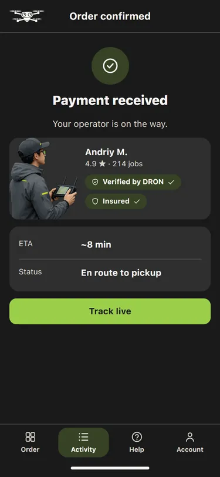
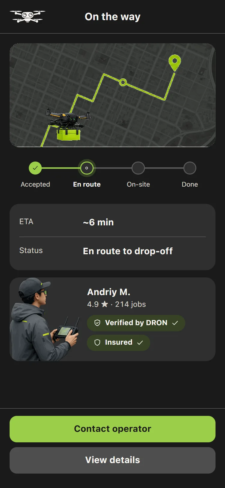
As expected?
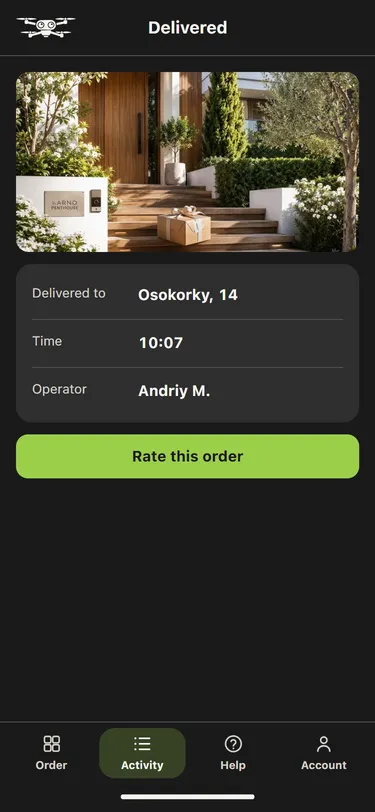
From the offer to the money on the card.
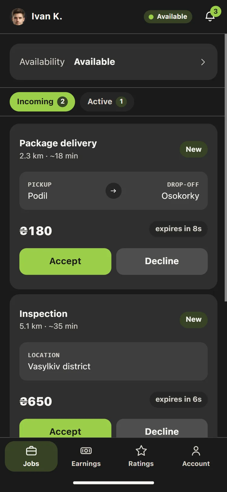
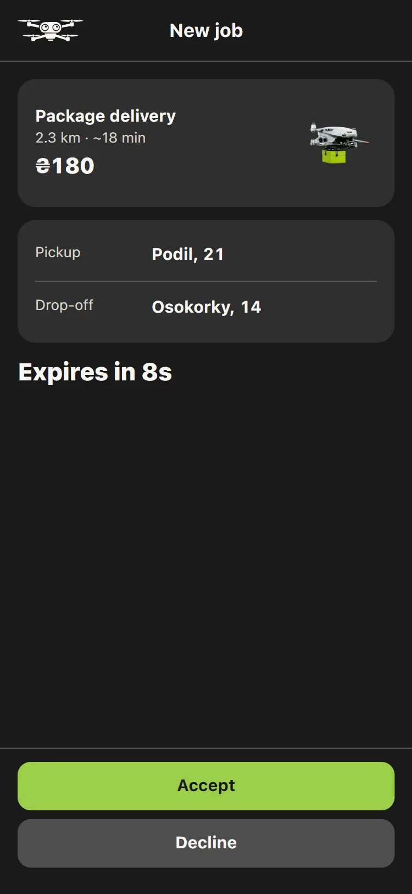
Accept in 10 s?
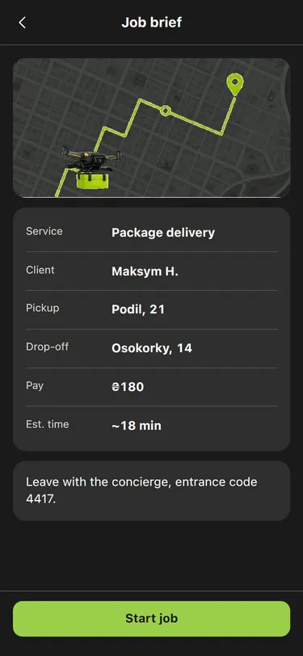
Able to fly?
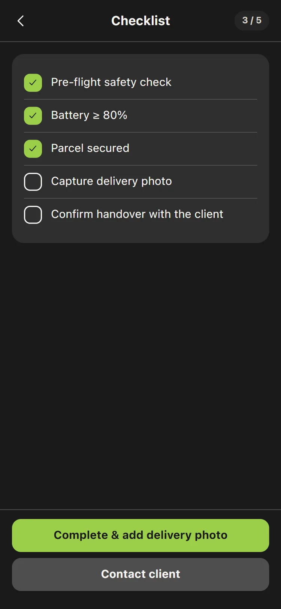
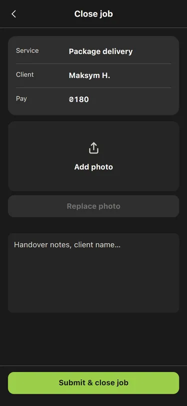
An issue in 2 h?
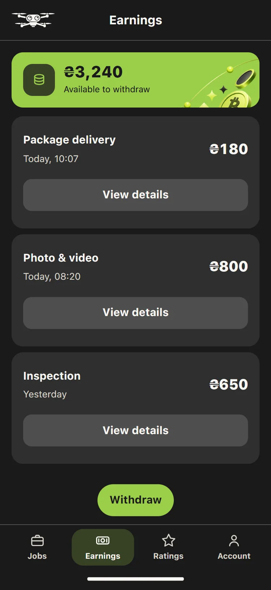
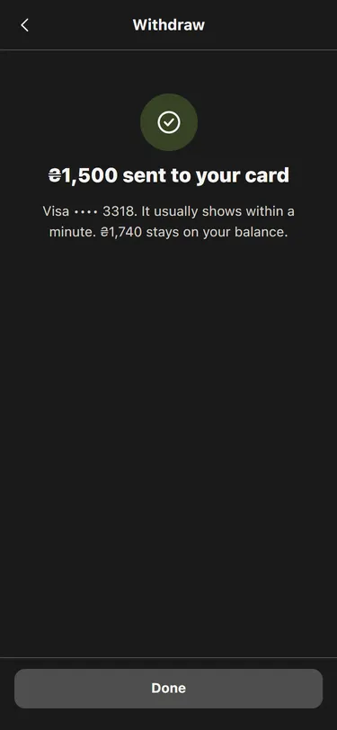

Tone of voice is how a product speaks: the words it picks, how formal it is and how it sounds when something goes wrong. One set of rules keeps every screen sounding like the same company you can trust
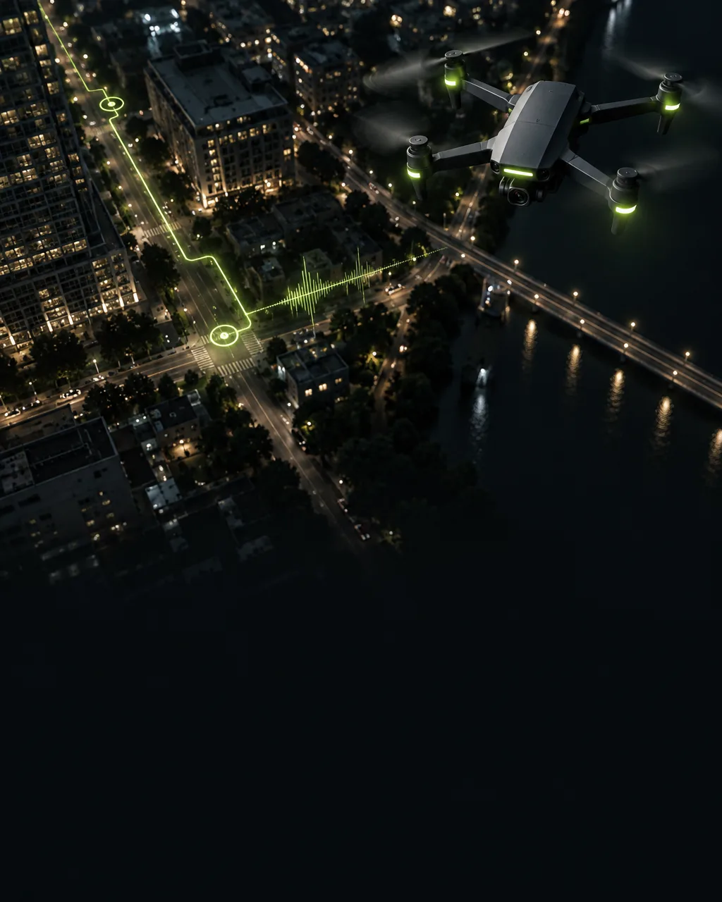
Not thisOops! Something went wrong 😅 Don't worry, we're on it!
DRONPayment declined. Nothing was taken from your account. Try again or use another method.
Not thisLook up, your delivery is inbound from the sky! 🚁
DRONDelivered. Your parcel arrived at 10:07.
Not thisOur trusted, professional, hand-vetted expert pilots.
DRONVerified by DRON · CAA licence · Insured · 214 jobs
Never: Oops!successfullyemoji in system messagesthe long dash

Design is where the structure gets its look and feel: colour, type, imagery and motion, on every screen and in every state. It turns a working layout into a product people trust at first glance. Below is the live demo, dark theme
A new take on the familiar admin panel and dashboard. Try the live demo.
Adaptive on every phone, so the end user is always at ease. Try the live demo.

A customer journey map follows one person through every stage with the product, what they feel there, and where they leave. Kateryna's journey has four stages; the line is her mood, the red points are where she leaves

A design system is the set of rules and parts a product is built from: tokens for colour, type, space and motion, components made of them, and patterns made of components. DRON's is one stylesheet the product links, documented like Apple's guidelines, in light and dark, with every colour pair measured against WCAG AA
SF Pro, ten steps, none below 11 pt; the system font, nothing to download.
One accent, a fill and never text; charcoal on green is 9.46:1.
Primary, secondary, tertiary and pay, 44 px tall; one green control per screen, primary on top.
Switch, chip, progress rail and 50 more.
Base 4; six radii from 10 to 999.
13 screen shapes, each used on three screens or more.
Three jobs: connect, show status, answer. No job, no animation.
The theme follows the device.

Handoff is the moment the design passes to the developers: the screens, the rules and the specs they need to build it. A clean handoff means the product is built as designed, without guesswork
Everything a developer needs to build DRON without asking me: what each screen is made of, how it behaves, and what ships.
Tokens, light and dark
372ship as tokens.css
Components
5313 patterns
Commits, June to October 2026
JunAugOct
Released
v1.0.0 · 27 Oct 2026
ResearchScreensSystemHandoff
Run it
$ python serve.py
What ships
design-system/tokens.css
The rest is reference: components, screens, assets